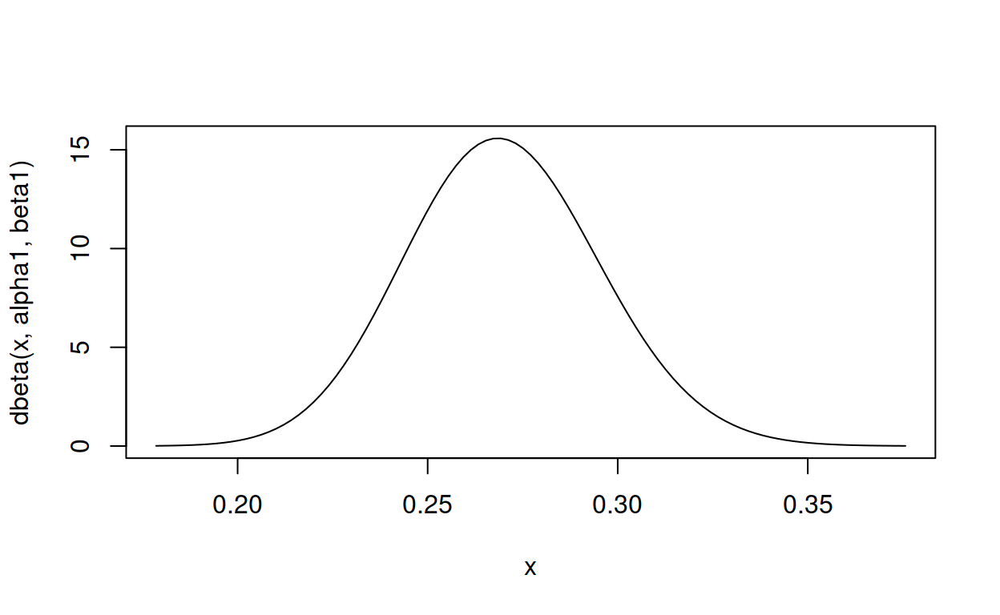

Given a distribution, how do you find the parameters? When choosing a beta prior for a Bayesian A/B test, for example.
I came up with these parameters for two reasons:
The mean is \(\frac{\alpha}{\alpha + \beta} = \frac{81}{81 + 219} = .270\)
As you can see in the plot, this distribution lies almost entirely within (.2,.35)- the reasonable range for a batting average. – David Robinson
What David Robinson is doing is best-practice for choosing a prior – ask an expert. But he makes a huge leap from what the expert says to what the parameters are. Normally you’d use dbeta(shape1, shape2) to get the distribution for given parameters, but here the problem is reversed: find the parameters for a distribution with a mean of .270 and a cumulative density of, say, .99 between .2 and .35.
How did David Robinson come up with the parameters 81 and 219? There aren’t tools for that. Perhaps he’s brainy enough to do the maths in his head and think, “Hmm, beta with mean = .270 and most of it between .2 and .35, in that case 81 and 219 should be about right.” Or perhaps he just tried some numbers and adjusted them until they worked. There are online tools for that, or you can use R. For example, here’s a beta distribution with an initial guess of the parameters shape1 = 2 and shape2 = 4).
curve(dbeta(x, 2, 4), from = 0, to = 1, type = "l")
Not quite right – the parameters need adjusting. And it turns out to be fairly straightforward to find parameters that get exactly the right mean by working with the formula for the mean \(\frac{\alpha}{\alpha + \beta}\). The mean can be interpreted as a number of successes divided by a number of attempts (successes + failures), so a mean of .270 successes every 1 attempt is like 270 successes every 1000 attempts. R’s parameterisation of the beta distribution is shape1 successes and shape2 failures, so a simple subtraction converts 270 successes and 100 attempts into (1000 - 270) failures.
curve(dbeta(x, 270, (1000 - 270)), from = 0, to = 1, type = "l")
Now the distribution has correct mean, but the peak is too narrow – most of it lies above 0.25, whereas David Robinson only aimed for it to be above .2 and below .35. Unfortunately the cumulative density function is to complicated to hack, but using a handy property – smaller parameters make wider peaks – let’s divide the parameters by a factor of, say, 3.
curve(dbeta(x, 270 / 3, (1000 - 270) / 3), from = 0, to = 1, type = "l")
270 / 3 is 90 for \(\alpha\), and (1000 - 270) / 3 is about 243 for \(\beta\), so this is in the ballpark of David Robinson’s parameters 81 and 219, and we could stop here.
No don’t stop! Don’t you see? What just happened was tedious trial and error; manual optimisation of the parameters to get the desired shape! The computer used you as a labour-saving device. Give a taste of its own medicine! Make the computer do the trial and error with optim()!
Here’s a function that plugs various values of shape1 and shape2 into qbeta() until it finds a curve with the properties we want: a mean of .270 and, say, 1% of the distribution to be below .2.
Effectively this re-parameterises the beta distribution to use “mean” and “amount below x” instead of shape1 “successes” and shape2 “failures.” Call it the Gimme Beta for ‘Gimme the beta I want’. But because I am lazy have a computer, instead of sweating over algebra to translate “mean” and “amount below x” into shape1 and shape2, I use optim() to find values of shape1 and shape2 that create a distribution that also satisifies my “mean” and “amount below x”. And then I can use shape1 and shape2 to do the A/B test, or whatever the prior is for.
\[ \mathrm{Gimme~Beta}(\mathrm{mean}, \mathrm{amount~below~}x) \sim \mathrm{Beta}(\mathrm{shape1}, \mathrm{shape2}) \]
gimme_beta <- function(mean, cumulative_density, below, par_start = c(2, 2),
plot_from_to = NULL) {
error <- function(x) {
alpha1 <- x[1]
beta1 <- x[2]
fitted_mean <- alpha1 / (alpha1 + beta1)
fitted_cumulative_density <- pbeta(below, alpha1, beta1)
squared_diffs <- sum((c(fitted_mean, fitted_cumulative_density )
- c(mean, cumulative_density))^2)
squared_diffs
}
estimate <- optim(par_start, error)
alpha1 = estimate$par[1]
beta1 = estimate$par[2]
if (is.null(plot_from_to)) {
plot_from_to <- c(qbeta(0.00005, alpha1, beta1),
qbeta(0.99995, alpha1, beta1))
}
y <- curve(dbeta(x, alpha1, beta1),
from = plot_from_to[1],
to = plot_from_to[2],
type = "l")
c(shape1 = alpha1, shape2 = beta1)
}How well does gimme_beta() do on David Robinson’s task?
gimme_beta(mean = .270, cumulative_density = .01, below = .2)
shape1 shape2
52.76072 142.63995 That isn’t far off the 81 and 219 that David Robinson came up with, but then we don’t know exactly what David Robinson meant by “lies almost entirely within”. What if we work out the \(\mu\) and \(\theta\) parameters of David Robinson’s actual distribution, plug them back into gimme_beta() and check again.
81 / (81 + 219) # mu, the mean
[1] 0.27
pbeta(.2, 81, 219) # theta, the percentage of the distribution that is below 0.2
[1] 0.001897932So plugging the (kinda) mean and the percentage-that-is-below-0.2 into gimme_beta(), does it give us David Robinson’s parameters back?
gimme_beta(mean = .270, cumulative_density = .001897932, below = .2)
shape1 shape2
81.12597 219.34148 Close enough for government work. And more importantly, gimme_beta() will gimme the parameters I need for my A/B test, which happen to be a mean of .23 with 5% of the distribution below 0.2.
gimme_beta(.23, .05, .2)
shape1 shape2
117.5303 393.5115